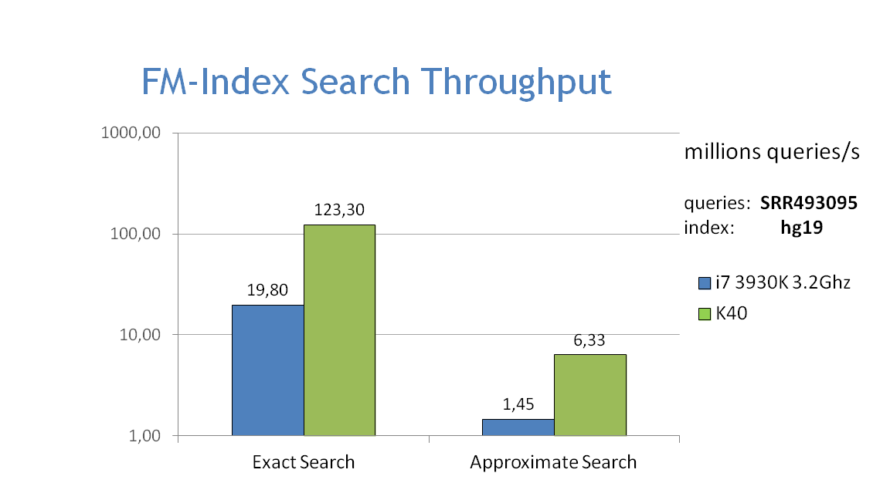
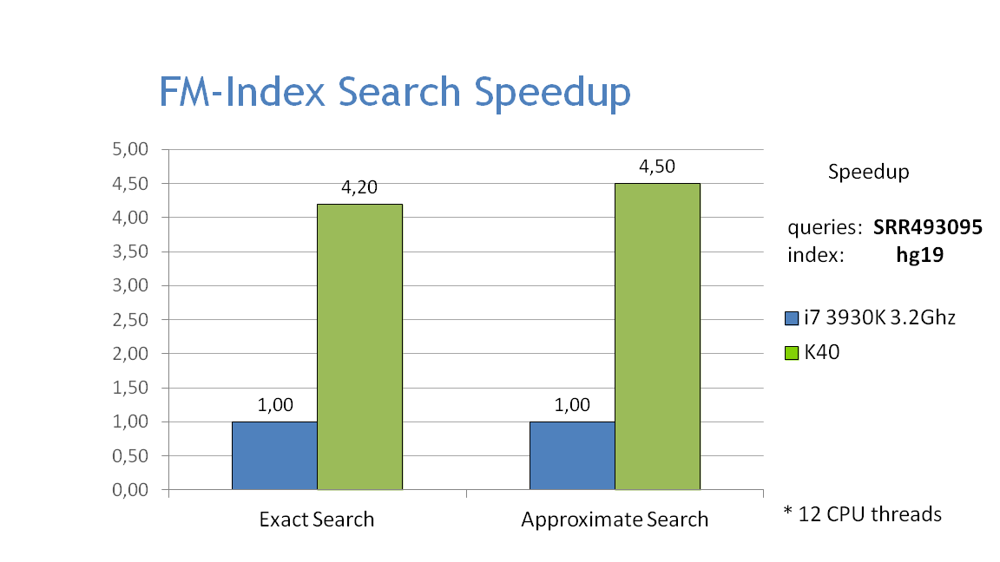

This module defines a series of classes to represent and operate on 2-bit FM-indices, both from the host and device CUDA code.
Rank Dictionaries
- A rank_dictionary is a data structure that, given a text T, allows to count the number of occurrences of any given character c in a given prefix T[0,i] in O(1) time.
- rank_dictionary is storage-free, in the sense it doesn't directly hold any allocated data - hence it can be instantiated both on host and device data-structures, and it can be conveniently passed as a kernel parameter (provided its template parameters are also PODs).
- It supports the following functions:
| Function | Inputs | Description |
rank()
| dict, i, c | return the number of occurrences of a given character c in the prefix [0,i] |
rank()
| dict, range, c | return the number of occurrences of a given character c in the prefixes [0,range.x] and [0,range.y] |
rank_all()
| dict, i | return the number of occurrences of all characters of the alphabet in the prefix [0,i] |
rank_all()
| dict, range | return the number of occurrences of all characters of the alphabet in the prefixes [0,range.x] and [0,range.y] |
- NOTE: the O(1) time refers to the complexity in the length n of the text; more properly, if the alphabet contains s characters (i.e. if the number of bits per symbol is b = log(s)), the complexity is O(log(s)). Similarly, the amount of space needed for a sparse occurrence table is O(n s). In other words, the amount of space is exponential in the number of bits per character.
- For a more compact data structure requiring O(n log(s)) storage, useful with larger alphabets, please refer to Wavelet Trees.
Sampled Suffix Arrays
- A Sampled Suffix Array is a succint suffix array which has been sampled at a subset of its indices. Ferragina & Manzini showed that given such a data structure and the BWT of the original text it is possible to reconstruct the missing locations. Two such data structures have been proposed, with different tradeoffs:
- one storing only the entries that are a multiple of K, { SA[i] | SA[i] % K = 0 }
- one storing only the entries whose index is a multiple of K, { SA[i] | i % K = 0 }
- NVBIO provides both:
-
- Unlike for the rank_dictionary, which is a storage-free class, these classes own the (internal) storage needed to represent the underlying data structures, which resides on the host. Similarly, the module provides some counterparts that hold the corresponding storage for the device:
-
- While these classes hold device data, they are meant to be used from the host and cannot be directly passed to CUDA kernels. Plain views (see Host & Device), or contexts, can be obtained with the usual plain_view() function.
- The contexts expose the following interface:
struct SSA
{
bool has(
const uint32 i)
const
}
- Detailed documentation can be found in the Sampled Suffix Arrays module documentation.
FM-Indices
- An fm_index is a self-compressed text index as described by Ferragina & Manzini. It is built on top of the following ingredients:
- Given the above, it allows to count and locate all the occurrences in T of arbitrary patterns P in O(length(P)) time. Moreover, it does so with an incremental algorithm that proceeds character by character, a fundamental property that allows to implement sophisticated pattern matching algorithms based on backtracking.
- fm_index is storage-free, in the sense it doesn't directly hold any allocated data - hence it can be instantiated both on host and device data-structures, and it can be conveniently passed as a kernel parameter (provided its template parameters are also PODs).
- It supports the following functions:
| Function | Inputs | Description |
rank()
| fmi, i, c | return the number of occurrences of a given character c in the prefix [0,i] |
rank_all()
| fmi, i | return the number of occurrences of all characters of the alphabet in the prefix [0,i] |
match()
| fmi, pattern | return the SA range of occurrences of a given pattern |
match_reverse()
| fmi, pattern | return the SA range of occurrences of a given reversed pattern |
locate()
| fmi, i | given a suffix array coordinate i, return its linear coordinate SA[i] |
Bidirectional FM-indices
- NVBIO also supports forward and backwards extension using bidirectional FM-indices:
- extend_forward() : extend the range corresponding to a pattern P to that of the pattern Pc
- extend_backwards() : extend the range corresponding to a pattern P to that of the pattern cP
- Instead of requiring an ad-hoc data structure, bidirectional queries are supported by simply using both a forward and a reverse FM-index. Note that extension can be done without a sampled suffix array, so that there's no need to store two of them: in practice, the FM-indices can also be of type fm_index <RankDictionary,null_type>.
Batch Filtering
- Performing massively parallel FM-index queries requires careful load balancing, as finding all occurrences of a given set of strings in a text is a one-to-many process with variable-rate data expansion. NVBIO offers simple host and device contexts to rank a set of strings and enumerate all their occurrences automatically:
-
- Here is an example showing how to extract a set of seeds from a string set and find their occurrences on the device:
template <typename fm_index_type>
void search_seeds(
const fm_index_type fm_index,
const string_set_type string_set,
{
string_set,
uniform_seeds_functor<>( seed_len, seed_interval ),
seed_coords );
typedef InfixSet<string_set_type, const string_set_infix_coord_type*> seed_set_type;
seed_set_type seeds(
n_seeds,
string_set,
FMIndexFilterDevice fm_filter;
const uint64 n_hits = fm_filter.rank( fm_index, seeds );
for (
uint64 hits_begin = 0; hits_begin < n_hits; hits_begin += batch_size)
{
fm_filter.locate(
hits_begin,
hits_end,
hits.begin() );
...
}
}
MEM Filtering
- Additionally to the exact matching filters above, NVBIO also some provides built-in functionality to find all (Super-) Maximal Extension Matches in a string or a string-set:
- find_kmems() : a host/device per-thread function to find all k-MEMs overlapping a given base of a pattern string
- find_threshold_kmems() : a host/device per-thread function to find all k-MEMs overlapping a given base of a pattern string for all threshold values of k
- MEMFilterHost : a parallel host context to enumerate all MEMs of a string-set
- MEMFilterDevice : a parallel device context to enumerate all MEMs of a string-set
- The filters are analogous to the ones introduced in the previous section, except that rather than finding exact matches for each string in a set, they will find all their MEMs or SMEMs.
Performance
- The graphs below show the performance of exact and approximate matching using the FM-index on the CPU and GPU, searching for 32bp fragments inside the whole human genome. Approximate matching is performed with the hamming_backtrack() function, in this case allowing up to 1 mismatch per fragment:


Technical Overview
- A complete list of the classes and functions in this module is given in the FMIndex documentation.


 1.8.4
1.8.4